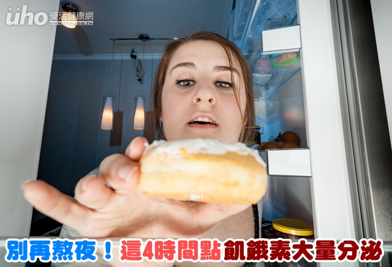

別再熬夜！這4時間點飢餓素大量分泌
（優活健康網記者林奐妤／綜合報導）春節假期結束，許多人因為過年期間不斷吃吃喝喝，體重上升，又要展開減重大計。世界衛生組織指出，肥胖是一種慢性病，造成糖尿病、代謝症候群、高血脂等風險比正常體態的人增加3倍；得到高血壓、膝關節炎、心血管疾病、痛風等風險則增加2倍。營養師提醒，肥胖者體重降低5％，就能改善血壓與血糖，均衡少吃加多動，是減重的不二法門。
過年久坐狂吃零食 體重上升
根據2013年至2016年國民營養健康變遷調查，台灣成人過重及肥胖盛行率為45.4％，男性有53.4％，女性則有38.3％。台灣人有2項冠軍，分別是愛吃肉、不愛動，也因此造成台灣為亞洲肥胖冠軍。
要如何減重？大林慈濟醫院腫瘤中心營養師凃宜辰表示，人體攝取熱量與消耗熱量就猶如一個蹺蹺板，當攝取熱量高於消耗熱量，體重就會上升。例如過年時長時間坐著不動，一直吃零食，體重當然會增加。
不吃早餐、「三高一低」飲食習慣易造成肥胖
造成肥胖的飲食習慣包括不吃早餐、不吃蔬菜、愛喝飲料、愛吃肉食、吃宵夜、三高一低（糖、鹽、油高、纖維質低）等。澱粉吃太少，會導致頭腦不清楚、情緒不穩、便秘、腹部肥胖等，因此減肥一定要吃澱粉，可以選用纖維質高的全榖根莖類當澱粉來源。
凃宜辰營養師建議，每天均衡飲食，最好吃25種以上食物，不要因為某種蔬菜葉很好，就每天吃固定一種蔬菜，最好每天換不同種類與顏色的食物。對減肥最重要的是天天五蔬果，選擇紅、綠、黃、白、黑等五色蔬果，避免高脂食物如控肉、雞皮、魚肚等，烹調方式盡量用清蒸、水煮、清燉、烤、滷、涼拌，不吃油炸食品，減少油脂攝取。
半夜一點飢餓素分泌旺盛 熬夜吃消夜易胖
攝取過多精製糖會造成記憶力變差、高膽固醇、脂肪肝、糖尿病、肥胖、痛風等，凃宜辰營養師提醒，男性約1800卡每天建議攝取精製糖約9顆方糖為限，女性約1500卡上限約7顆方糖，小朋友如果吃糖，會造成生長激素停止分泌2小時，影響成長，建議口渴時不要喝含糖飲料，喝開水最好。想要健康減重，要維持均衡飲食，避免精製糖，不喝飲料，留意飲食技巧。
在飲食技巧方面，進食順序為先喝湯、吃青菜，再攝取低脂蛋白質（豆腐或是魚肉或雞胸肉）、纖維高全榖根莖類，進食時細嚼慢嚥；看電視時零嘴可以用水果、堅果，取代高熱量爆米花、洋芋片、瓜子等零食。
凃宜辰營養師提醒，每天上午8點、中午12點、下午5點及半夜一點，身體飢餓素分泌旺盛，若是熬夜不睡，就會想吃宵夜，建議要按時睡覺，不要熬夜也很重要，才不會有想吃宵夜欲望，更不要因為壓力用「吃」抒壓。均衡少吃而不是只有某一樣不吃，均衡飲食加上多運動，就有希望減重成功。